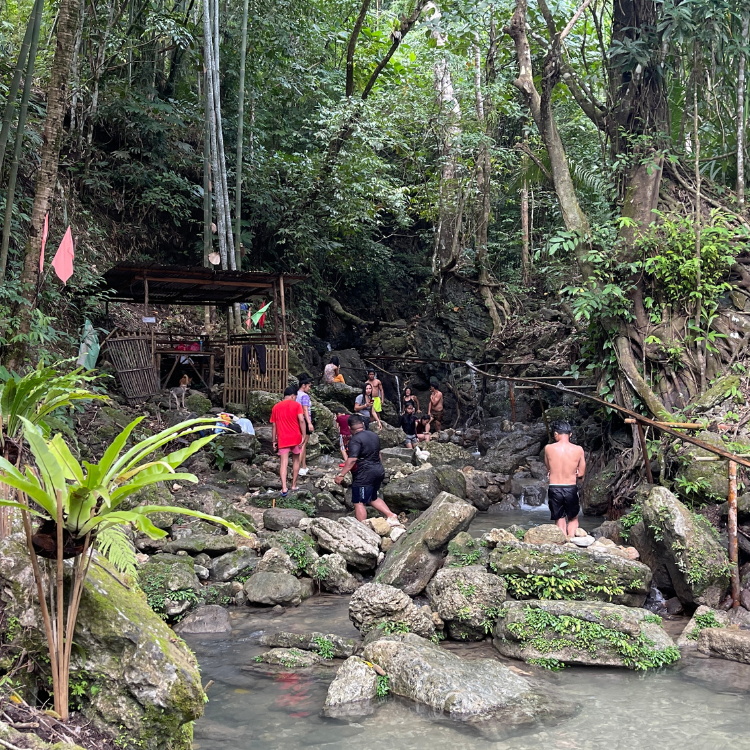
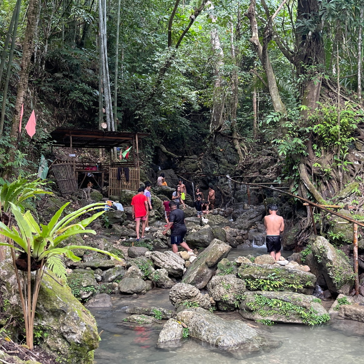

Sustainability and Conservation Efforts
Before you get to arrive to the falls you will cross first the river, the rivers current are sometimes strong that's why they have the raft or in bisaya it's called "balsa".
Since the visitors and even the locals are having hard time to get to the falls because of the river they are hoping to have a bridge. The baranggay officials are asking help to the tourism office of the municipality of Ibajay, if they can help them with the financial budget.
The locals also are planning to build a small "bamboo hut or nipa hut" that can accommodate the visitors to have an overnight stay. They also have solar lights, promoting sustainability. They are currently building their second restroom. Also, they are now currently working with the stairs beside the pool.